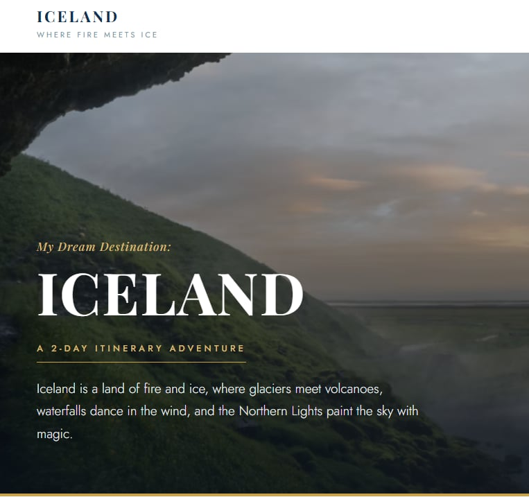
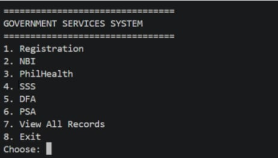
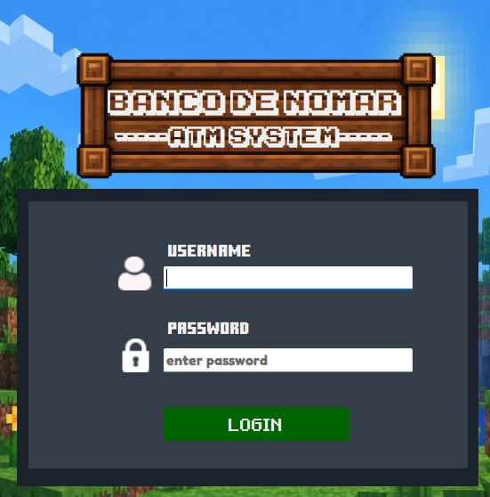

My Skills
Technical Skills
- Microsoft Office
- Google Workspace
- Basic Computer Troubleshooting
- Basic Computer Networking
- Basic Software Installation
Programming & Web Development
- Java
- Python
- VB.NET
- HTML
- CSS
- JavaScript
Other Skills
- Problem Solving
- Teamwork
- Communication
- Time Management
- Adaptability
- Critical Thinking
Projects Overview
| Project | Description | Technologies Used |
|---|---|---|
| 2-Day Itinerary | A simple 2-day travel itinerary page for a trip to Iceland, covering daily sightseeing stops, a packing list, and local food recommendations. | HTML, CSS |
| Government Services System | A Java console application simulating Philippine government service transactions: apply for PSA certificates, DFA passports, NBI clearances, and SSS/PhilHealth membership and contributions. | Java |
| Banco De Nomar | A simple banking application for managing customer accounts and transactions. | VB.NET |
Featured Projects

2-Day Itinerary
A simple 2-day travel itinerary page for a trip to Iceland, covering daily sightseeing stops, a packing list, and local food recommendations.

Government Services System
A Java console application simulating Philippine government service transactions. It lets you apply for PSA certificates, DFA passports, NBI clearances, and SSS/PhilHealth membership and contributions.

Banco De Nomar
A simple banking application for managing customer accounts and transactions.